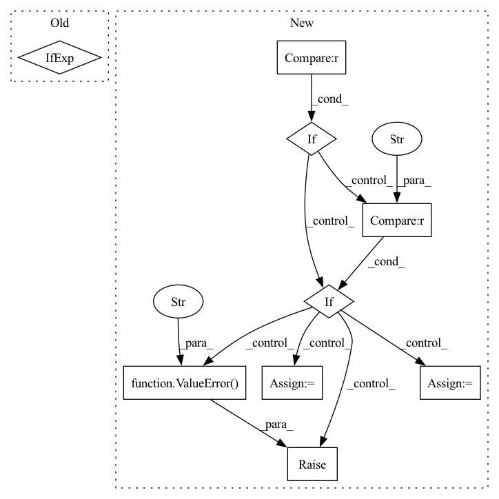

Pattern ID :26363

Before Change
quantizer_channels = extract_channels[-1]
post_quantizer_channels = context_channels[-1]
extra_args = (
{"num_residuals": quantizer_num_residuals}
if quantizer_type == "rvq"
else {}
)
self.quantizer = Quantizer1d(
After Change
quantizer_channels = extract_channels[-1]
post_quantizer_channels = context_channels[-1]
if self.quantizer_type == "timewise":
self.quantizer = Quantizer1d(
channels=quantizer_channels,
num_groups=quantizer_groups,
codebook_size=codebook_size,
expire_threshold=quantizer_expire_threshold,
num_residuals=quantizer_num_residuals,
)
elif self.quantizer_type == "channelwise":
assert_message = "quantizer_split_size required with channelwise type"
assert quantizer_split_size is not None, assert_message
self.quantizer = QuantizerChannelwise1d(
channels=quantizer_channels,
split_size=quantizer_split_size,
num_groups=quantizer_groups,
codebook_size=codebook_size,
expire_threshold=quantizer_expire_threshold,
num_residuals=quantizer_num_residuals,
)
else:
raise ValueError("Quantizer type must be timewise or channelwise")
self.post_quantizer = nn.Sequential(
ResnetBlock1d(
in_channels=quantizer_channels,
In pattern: SUPERPATTERN
Frequency: 3
Non-data size: 9
Instances
Fragment ID: 79167031
Project Name: archinetai/audio-diffusion-pytorch-trainer
Commit Name: d95282a5569b4aecd3bd9a11e751ecf659093bde
Time: 2022-09-09
Author: flavio.schneider.97@gmail.com
File Name: main/module_diffqe.py
M Class Name: Model
N Class Name: Model
M Method Name: __init__(38)
N Method Name: __init__(38)
M Parent Class: pl.LightningModule
N Parent Class: pl.LightningModule
M File Name: main/module_diffqe.py
N File Name: main/module_diffqe.py
M Start Line: 58
M End Line: 107
N Start Line: 63
N End Line: 116
'>
Before Change
sparse_layer = cast_tuple(sparse_attn, depth)
for _, sparse_attn in zip(range(depth), sparse_layer):
attn_class = Attention if not sparse_attn else partial(SparseAttention, sparse_attn_global_indices = sparse_attn_global_indices)
layers.append(nn.ModuleList([
PreNorm(dim, attn_class(dim, causal = causal, seq_len = seq_len, heads = heads, dim_head = dim_head, dropout = attn_dropout, noncausal_attn_len = noncausal_attn_len)),
After Change
attn_type_layer = islice(cycle(attn_types), depth)
for _, sparse_attn, attn_type in zip(range(depth), sparse_layer, attn_type_layer):
if attn_type == "full":
attn_class = partial(Attention, noncausal_attn_len = noncausal_attn_len)
elif attn_type == "sparse":
attn_class = partial(SparseAttention, sparse_attn_global_indices = sparse_attn_global_indices)
elif attn_type == "axial_row":
attn_class = partial(SparseAxialCausalAttention, seq_len = seq_len, axis = 0, image_size = image_fmap_size)
elif attn_type == "axial_col":
attn_class = partial(SparseAxialCausalAttention, seq_len = seq_len, axis = 1, image_size = image_fmap_size)
elif attn_type == "conv_like":
attn_class = partial(SparseConvCausalAttention, seq_len = seq_len, image_size = image_fmap_size)
else:
raise ValueError(f"attention type "{attn_type}" is not valid")
layers.append(nn.ModuleList([
PreNorm(dim, attn_class(dim, causal = causal, seq_len = seq_len, heads = heads, dim_head = dim_head, dropout = attn_dropout)),
PreNorm(dim, FeedForward(dim, mult = ff_mult, dropout = ff_dropout))
'>
Fragment ID: 79167030
Project Name: lucidrains/dalle-pytorch
Commit Name: de732e8756750e161f0e51fac8baf9bcdb13182e
Time: 2021-02-10
Author: lucidrains@gmail.com
File Name: dalle_pytorch/transformer.py
M Class Name: Transformer
N Class Name: Transformer
M Method Name: __init__(1)
N Method Name: __init__(1)
M Parent Class: nn.Module
N Parent Class: nn.Module
M File Name: dalle_pytorch/transformer.py
N File Name: dalle_pytorch/transformer.py
M Start Line: 67
M End Line: 68
N Start Line: 75
N End Line: 92
'>
Before Change
// build first step conv 1x1.
self.conv_list.append(ConvBNReLU(in_channels, out_channels // 2, kernel_size=1, bias=False))
// avg pool in skip if stride = 2.
self.skip_step1 = nn.AvgPool2d(kernel_size=3, stride=2, padding=1) if stride == 2 else nn.Identity()
in_channels = out_channels // 2
mid_channels = in_channels
After Change
// build first step conv 1x1.
self.conv_list.append(ConvBNReLU(in_channels, out_channels // 2, kernel_size=1, bias=False))
// build skip connection after first convolution.
if stride == 1:
self.skip_step1 = nn.Identity()
elif stdc_downsample_mode == "avg_pool":
self.skip_step1 = nn.AvgPool2d(kernel_size=3, stride=2, padding=1)
elif stdc_downsample_mode == "dw_conv":
self.skip_step1 = ConvBNReLU(
out_channels // 2, out_channels // 2, kernel_size=3, stride=2, padding=1, bias=False, groups=out_channels // 2, use_activation=False
)
else:
raise ValueError(f"stdc_downsample mode is not supported: found {stdc_downsample_mode}," f" must be in [avg_pool, dw_conv]")
in_channels = out_channels // 2
mid_channels = in_channels
// build rest conv3x3 layers.
'>
Fragment ID: 79167026
Project Name: deci-ai/super-gradients
Commit Name: 98083d4303f887cb29f39029871612fe5e2e4753
Time: 2022-11-02
Author: 88616312+lkdci@users.noreply.github.com
File Name: src/super_gradients/training/models/segmentation_models/stdc.py
M Class Name: STDCBlock
N Class Name: STDCBlock
M Method Name: __init__(6)
N Method Name: __init__(5)
M Parent Class: nn.Module
N Parent Class: nn.Module
M File Name: src/super_gradients/training/models/segmentation_models/stdc.py
N File Name: src/super_gradients/training/models/segmentation_models/stdc.py
M Start Line: 34
M End Line: 43
N Start Line: 29
N End Line: 53